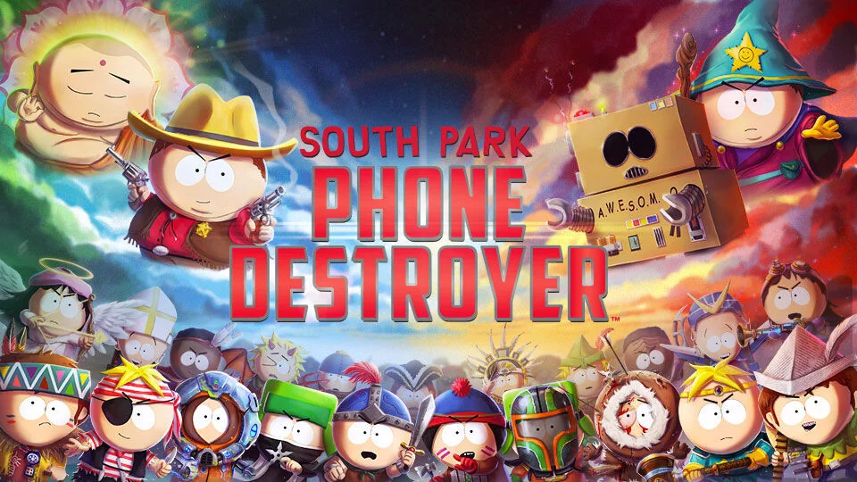
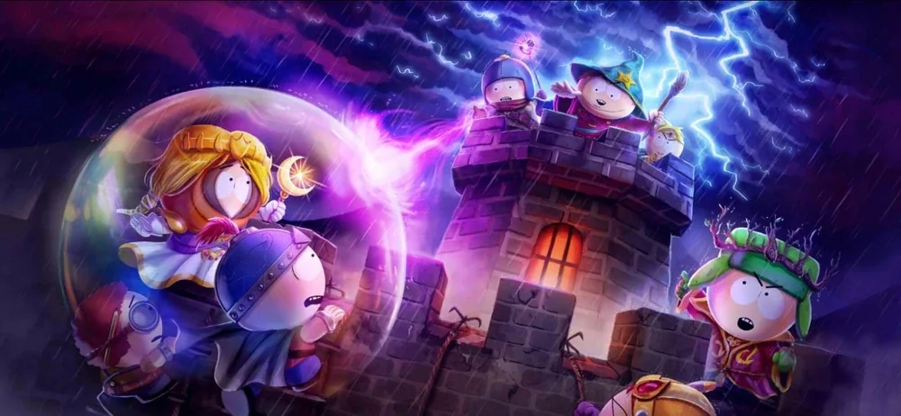
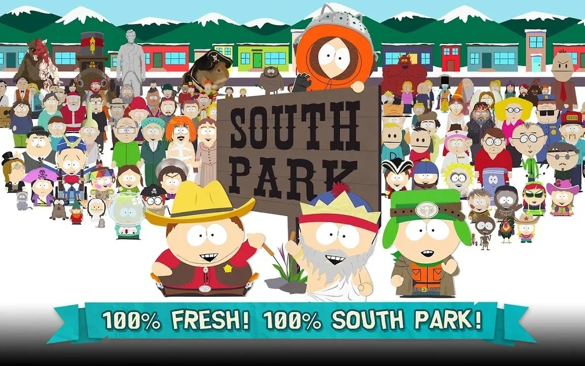
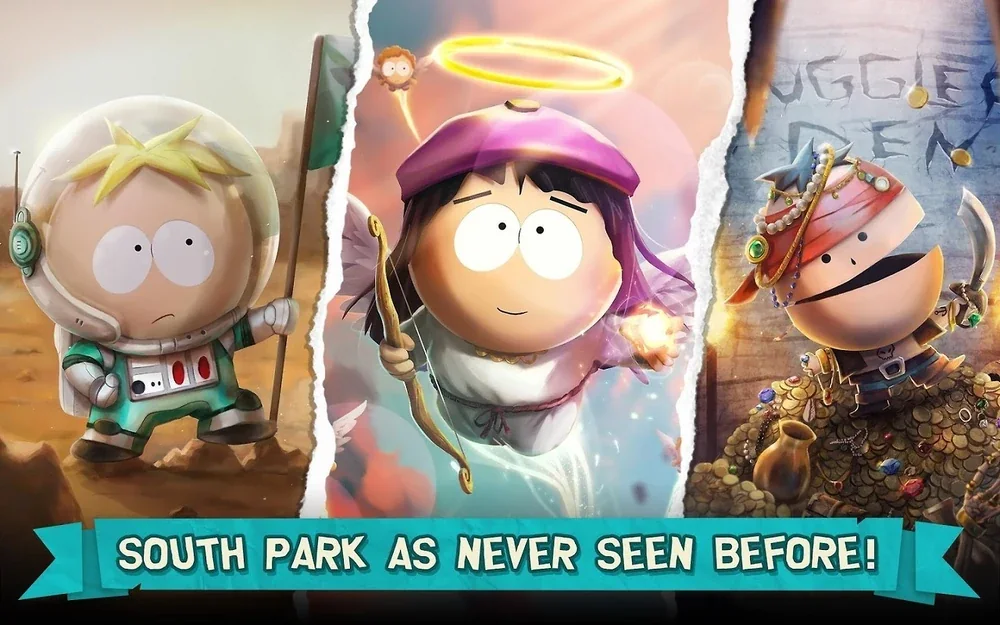

Protect the source
Preserve the show’s proportions, graphic simplicity, poses, expressions and visual humor.
Case study · Licensed IP Art Direction
Translating one of entertainment’s most recognizable visual identities into a scalable mobile-game production system—while protecting brand fidelity, readability, gameplay clarity and approval requirements.
The challenge
South Park has a visual language that appears simple but is extremely unforgiving. Character proportions, poses, facial construction, line treatment, timing, color relationships and staging all contribute to an identity audiences recognize immediately.
The challenge was not to reinterpret the show’s aesthetic, but to understand its rules deeply enough to reproduce them consistently across a game production with new content, gameplay readability requirements and mobile constraints.
Art-direction objective
The direction had to be simple enough for teams to apply repeatedly, yet precise enough to prevent small deviations from accumulating into something that no longer felt authentic.
Preserve the show’s proportions, graphic simplicity, poses, expressions and visual humor.
Keep silhouettes, attacks, states, VFX and information readable on a small mobile screen without breaking the license.
Create a visual system multiple artists can apply consistently across a growing content library.
Make visual decisions clear enough to support efficient review and approval.
Balance authenticity with animation, UI, technical and schedule constraints.
Ensure characters, environments, cards, effects and UI all belong to the same universe.
Visual rules
On a strongly licensed property, art direction often lives in details that would be insignificant on a looser visual style. The role is to identify which deviations damage authenticity and which adaptations are necessary for gameplay.
Maintain proportions, construction, pose language and facial simplicity while supporting new costumes and roles.
Keep movement readable and funny without introducing animation language disconnected from the source.
Use VFX to support combat clarity without overpowering the deliberately simple character style.
Make cards, icons, progression and interface elements game-ready while tonally compatible with the license.
Methodology
The practical objective was to make the visual language teachable. Direction had to move from personal taste to shared criteria that artists and production could use efficiently.
Production leadership
The role required maintaining one target while many assets were produced in parallel. The more recognizable the source material, the less room there is for different teams to create their own interpretation.
Make reviews consistent across characters, UI, effects, environments and supporting assets.
Explain why something feels off and what must change to restore authenticity.
Protect the license instead of imposing an art director’s personal style.
Turn visual recognition into a process teams can apply repeatedly under schedule pressure.
Public shipped work
The public visuals below show the licensed visual language in production. Each image is displayed complete at its native ratio, with no crop and no portfolio text covering logos, UI or embedded information.




What this proves
Wrath of the Druids demonstrates visual ownership inside AAA production. THE KIB demonstrates original-IP creation. Ghost Recon demonstrates operational leadership. South Park demonstrates another capability: understanding an existing identity so precisely that a team can extend it without diluting it.